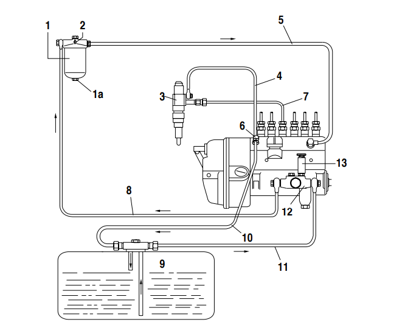
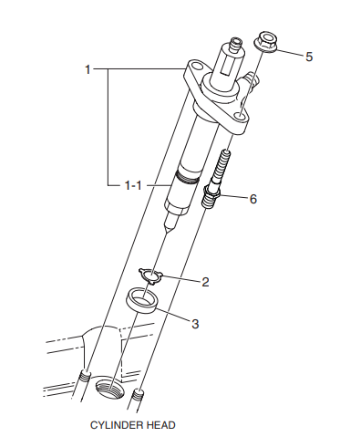
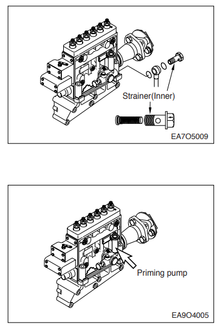

Evaluación de Seguridad Previa
1. Verificación de EPP e Indumentaria
2. Evaluación de Riesgos y LOTO

1. LOTO y Energías Residuales
El Bloqueo (LOTO) en el panel es la medida base. Para el Sistema 1, controle las siguientes energías residuales:
Cañerías presurizadas. Riesgo: Inyección subcutánea. Control: Despresurizar aflojando tornillos de purga con paño grueso. Nunca exponer piel a chorros.
Inyectores cerca del escape (>500°C). Riesgo: Ignición de diésel. Control: Permiso de Trabajo en Caliente denegado. Esperar enfriamiento.
Ventilador y turbo girando tras apagado. Control: Prohibido acercarse a la zona frontal hasta confirmar detención total.
Riesgo: Arranque intempestivo al barrar el motor. Control: Firma de ART. Desconectar y bloquear borne negativo de batería 24V.
Componentes pesados. Control: Uso de tecles certificados para izaje de la bomba de inyección Zexel.
Vapores de diésel. Control: Leer HDS. Garantizar ventilación mecánica en el recinto. Contención según MARPOL.
2. Análisis FMECA (Prioridad de Riesgo)
Cálculo de Criticidad: NPR = Severidad (S) × Ocurrencia (O) × Detección (D).
| Subconjunto | S | O | D | NPR | Clasificación | Efecto Global en el Sistema |
|---|---|---|---|---|---|---|
| Prefiltro separador agua | 8 | 5 | 8 | 320 | Crítico | Falla oculta. Pasa agua a los inyectores causando corrosión y gripado severo. |
| Inyectores | 7 | 4 | 4 | 112 | Crítico | Mala atomización, sobretemperatura en cilindros y riesgo de fundición de pistón. |
| Bomba Inyección Zexel | 8 | 3 | 3 | 72 | Crítico | Pérdida de propulsión o parada intempestiva del grupo electrógeno. |
| Filtros de Diésel | 6 | 6 | 2 | 72 | Crítico | Restricción de caudal, cavitación en bomba y pérdida de potencia. |
| Línea de Retorno | 5 | 3 | 2 | 30 | No Crítico | Fuga exterior sin presión. Riesgo de incendio pero no detiene el motor de inmediato. |
| Estanque Diario | 3 | 2 | 2 | 12 | No Crítico | Condensación de agua. Se mitiga mediante purga regular del grifo de fondo. |

Figura 1: Flujo del sistema de alimentación de combustible P126TI-II.
3. Planificación de Tareas y Herramientas
| Trabajo a Realizar | Frecuencia | Dotación | HH Totales |
|---|---|---|---|
| Drenaje agua separador | Cada 200 h | 2 Operarios | 1.0 HH |
| Cambio filtros y limpieza tamiz | Cada 400 h | 2 Operarios | 2.0 HH |
| Calibración 6 inyectores | 1200 h / Correctivo | 2 Operarios | 6.0 HH |
* Las Horas-Hombre (HH) han sido estimadas mediante medición directa en el Laboratorio de Máquinas.
Equipamiento Técnico y Torques:
- Genéricas: Llaves punta corona (10, 12, 14, 17, 19 mm), cubeta antiderrame.
- Específicas: Llave de cinta/cadena para filtros, extractor de inyectores.
- Calibración Vigente: Pop Tester (Banco Inyectores 0-400 kg/cm²), Torquímetro (1.0 - 10.0 kg·m).
- Torques Críticos: Porta-inyector a culata (1.0 kg·m), Cañerías Alta Presión (3.0 a 4.0 kg·m), Pernos acople bomba (6.0 kg·m).

Figura 2: Conjunto porta-inyector de 2 resortes.
4. Procedimiento Paso a Paso
Fase 1: ART, LOTO y Drenaje
Revisar y firmar el ART y consultar la HDS del diésel. Cerrar y bloquear con candado LOTO la válvula del estanque. Desconectar borne negativo de batería 24V. Colocar cubeta bajo prefiltro separador, girar válvula inferior 2 vueltas, drenar agua hasta ver diésel limpio. Abrir grifo de fondo del estanque para purgar condensación.

Figura 3: Prefiltro con tapón de purga inferior.
Fase 2: Cambio de Filtros y Malla
Limpiar soporte del filtro. Desenroscar cartucho con llave de cinta. Lubricar sello nuevo con diésel y pre-llenar filtro. Apretar a mano y dar 1/2 a 3/4 de vuelta (no sobreapretar). Extraer perno banjo de la entrada de la bomba de alimentación, retirar el tamiz (strainer) interno, limpiar con aire e instalar con golillas de cobre nuevas.

Figura 4: Bomba de alimentación y cebador manual.
Fase 3: Inyectores y Alta Presión
Desconectar retornos. Despresurizar y soltar cañerías de alta presión (riesgo inyección subcutánea) con llaves 17/19mm. Extraer inyectores. En el Pop Tester, probar estanqueidad a 200 bar y verificar presiones de apertura (160 y 220 kg/cm²). Reinstalar con sellos de cobre (0.5 mm). Torque culata: 1.0 kg·m.
Fase 4: Purga y Gestión de Residuos
Abrir válvula del estanque. Aflojar tornillos de purga en filtro y bomba. Bombear cebador manual hasta que fluya sin burbujas. Gestión MARPOL: Disponer filtros y paños en tambores de Residuos Peligrosos (RESPEL). Prohibido verter en sentinas.